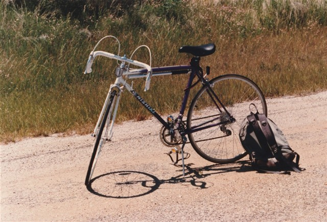
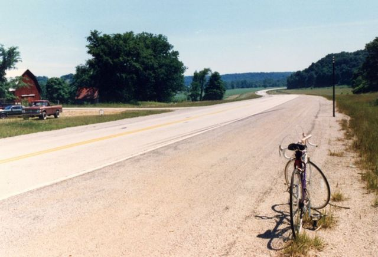
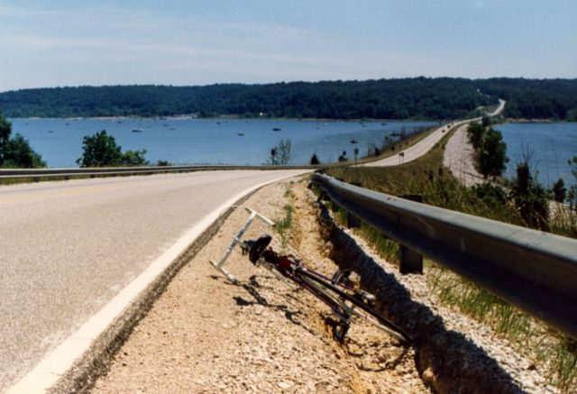
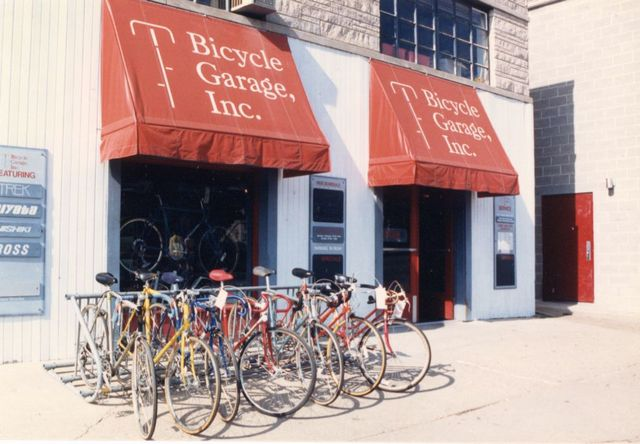
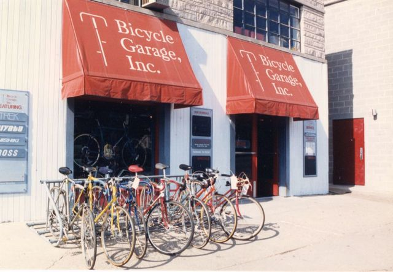

過去のクロモリ
ブリジストン Atrantis スポルティーフ
ランドナーとロードバイクの中間的な位置づけのスポルティーフという種類の自転車。 自転車の知識が無かった貧乏学生が、なぜ普及モデルのロードマンではなく上位モデルのAtlantisを購入したのかは謎。 たまたま購入したこの自転車のおかげで長距離ツーリングの楽しみを知り、今に至る。
 （詳細スペック）
（詳細スペック）
Nishiki Custom Sport
米国滞在時に日常の移動手段として買ったNishikiのロードバイク。 駆動系はSuntour、制動系はDia Compe、ホイールはArayaという、そうそうたるJapanブランド。 最後の写真は購入した自転車屋。
   

アトランティス（Atlantis）スポルティーフ
- 車種略号: ASP-530
- フレームサイズ: 530mm
- 重量: 11.4kg
- 全長: 172cm
- 全幅: 40cm
- サドル地上高: 最小85cm
| フレーム |
ダイヤモンド型 上下パイプ（CrMo クォダラブルバテット） 立パイプ（CrMo シングルバテット） 16ΦCrMoシート 巻ステー ロストワックス製 オリジナルシートラグ ホーククラウン 8t鍛造 オリジナルストレートエンド センタープルブレーキ台座直付 シートポスト 27.0Φ |
| ハンドル |
軽合金 フランコベルジュ型ドロップ 軽合金 鍛造ステム 日東パール ベル直付ネジ付 幅 370mm、突出し 60mm |
| ドロヨケ |
軽合金 セフティキャップ付 軽合金5Φ巻ステー 隠し止輪行式 |
| キャリア | 小型 6Φパイプ製 CP |
| サドル | #17型 プラスチックベース 本革張り |
| リム |
700C用 22mm幅 軽合金 ダブルホロータイプ WO 36H |
| タイヤ |
700×28C WO 黒トレッド アメサイド チューブ 仏式バルブ |
| スポーク |
#14 18-8ステンレス 304L 303L（フリー側） |
| ハブ |
軽合金スモールクイック シールドベアリング式 （前）100mm 36H、（後）126mm 36H |
| ディレイラー |
（前）ローノーマル パンタグラフ式 サイクロン マークII （後）トップノーマル スラントパンタグラフ式 サイクロン マークII GT 下パイプ直付 Wレバー カンパタイプ台座 |
| フリーホイール |
6段 1/2 x 3/32 14×15×17×19×21×24T シルバー仕上げ ボスタイプ |
| ギヤクランク |
3段 1/2 x 3/32 50×45×36T×165L コッタレス 軽合金クランク 5ピン止 T.Aパターン アウター センター インナーギア交換式 |